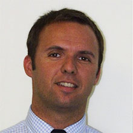

Qui sommes-nous ?
Entreprise jeune et dynamique, Kozea est en recherche permanente de
nouveaux challenges !
Depuis 2007, Kozea se positionne comme un expert dans le domaine du
web pour les acteurs de la santé (pharmaciens, médecins généralistes
et spécialistes, cliniques, hôpitaux, laboratoires pharmaceutiques…).
Véritable incubateur de solutions digitales innovantes, Kozea vous
fait bénéficier des compétences et de l’expérience de toute son
équipe afin de vous proposer la meilleure réponse à votre
problématique :
- création de logiciels libres et open source
- développement technique et webdesign de sites internet : du site vitrine à la vente en ligne
- plateforme d’enquêtes et sondages
- extraction et analyse de données
- conseil et recommandation
Les fondateurs
À l’origine de Kozea : 2 entrepreneurs très différents mais dont la
complémentarité a été une évidence.
Philippe Donadieu

Philippe Donadieu est docteur en pharmacie et titulaire d'un
diplôme de troisième cycle universitaire en marketing et gestion à
l'IAE d'Aix-en-Provence. Il a occupé des postes de direction
marketing, ventes et commerciale dans l'industrie pharmaceutique
durant dix ans. Pendant les 8 années passées sur les marchés ville
et hospitalier du médicament générique, Philippe Donadieu a mis en
place des actions valorisant l'acte pharmaceutique et le conseil
associé au comptoir. Durant les deux dernières années, il a
développé, pour le compte d'un laboratoire pharmaceutique
international, une expertise entreprise en biotechnologie dans le
domaine de la cancérologie.
Imitateur hors pair et possédant un humour décapant, il a su
s’entourer des personnes qui ont cru en son challenge auprès des
professionnels de santé.
Guillaume Ayoub
Guillaume Ayoub est un ingénieur de l’INSA en informatique qui a
commencé chez Kozea en tant que stagiaire. Sa pugnacité et sa
créativité en développement web ont conduit naturellement à une
association avec Philippe Donadieu.
Pince sans rire, émotionnellement généreux il est à l’origine de
nombreux projets en logiciel libre qui assurent aujourd’hui le
succès de Kozea.